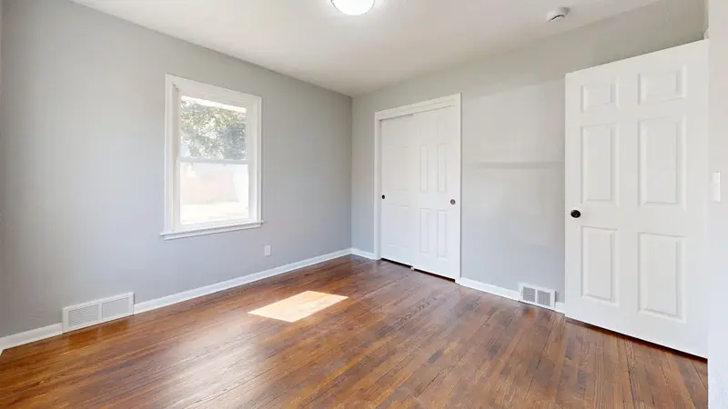

LinenWalls and ceilings
Interior rooms
Bedrooms, living rooms, hallways and stairwells. Walls, ceilings or both.
- When you need it
- Scuffed or faded walls, a color you are tired of, or patched spots that show through.
- What is included
- Moving and covering furniture
- Nail holes, dings and small cracks filled and sanded
- Walls, ceilings or both, with the coats listed on your estimate
- How it goes
- Floors covered and edges taped. When we leave, the furniture goes back where it was.